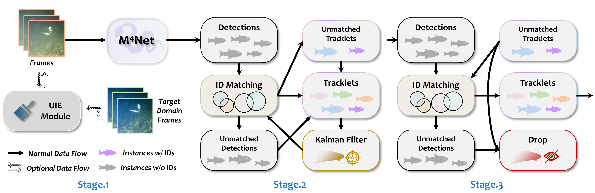
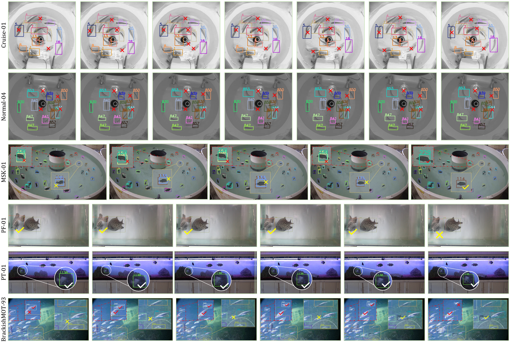
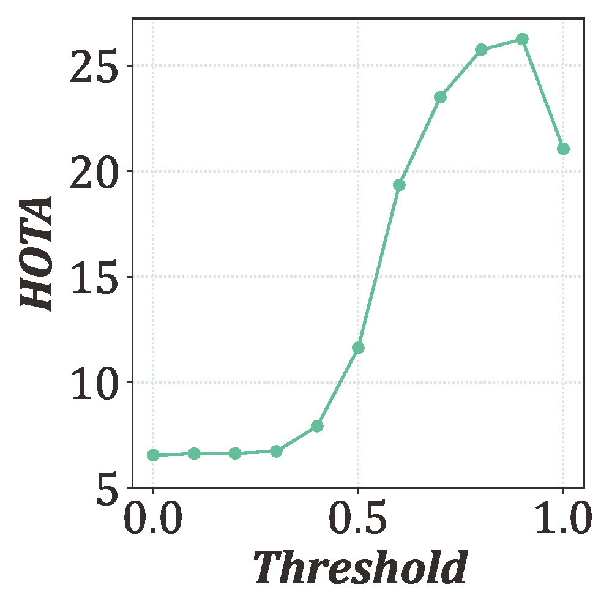
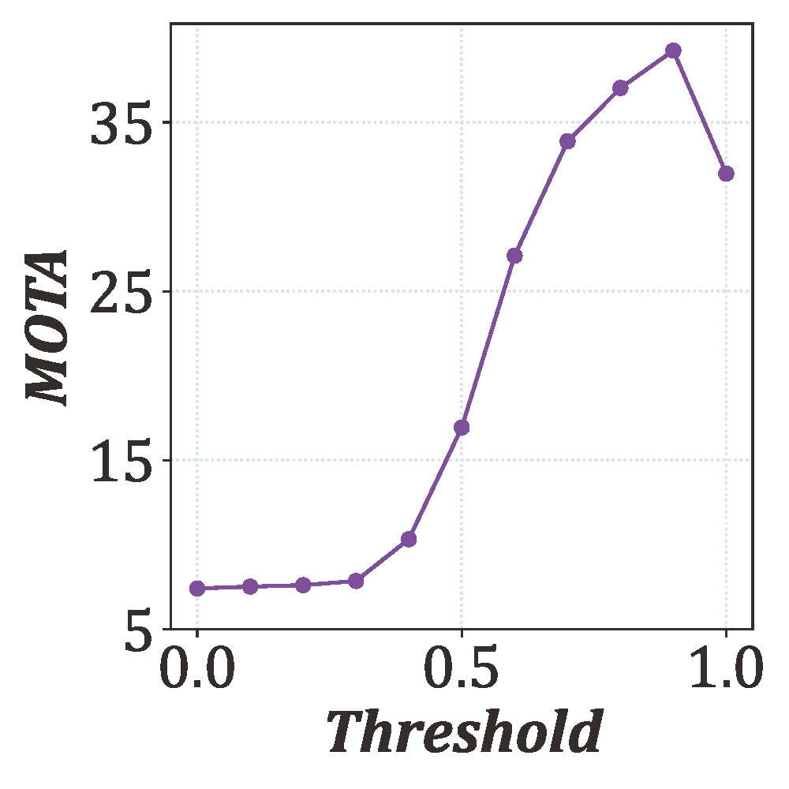
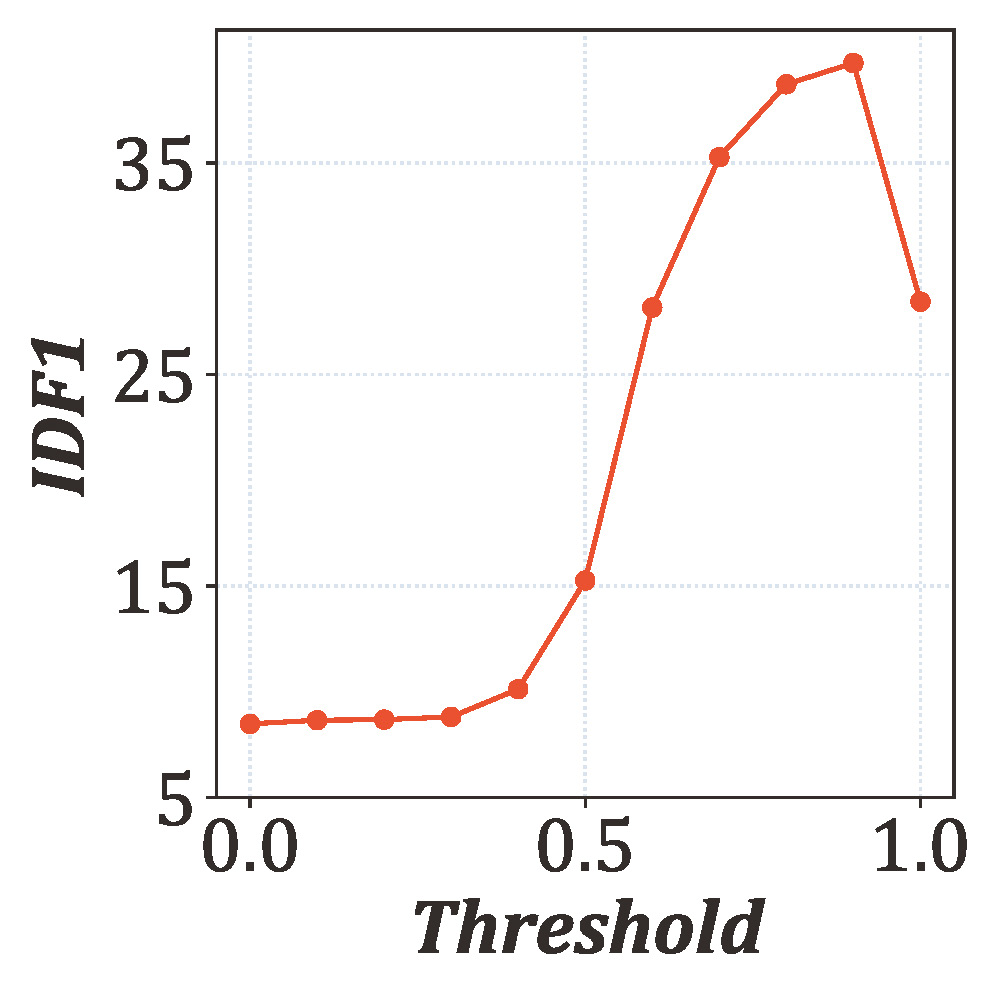
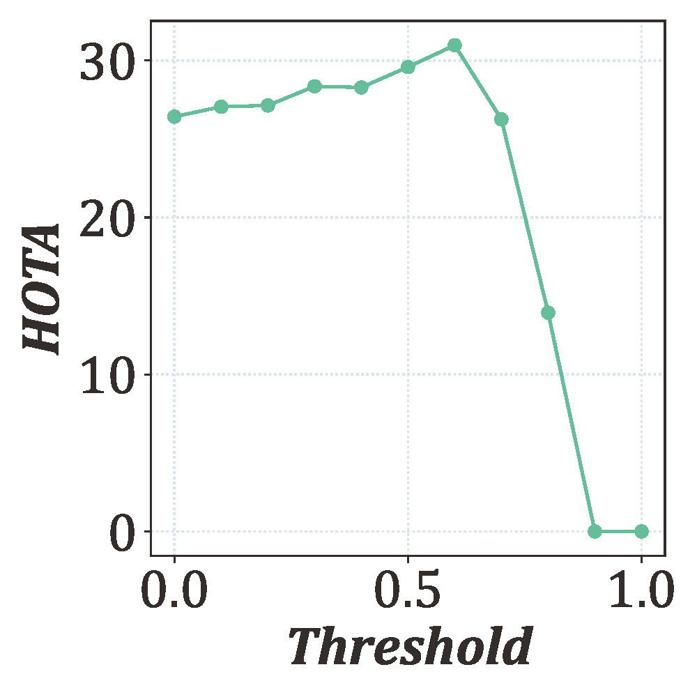
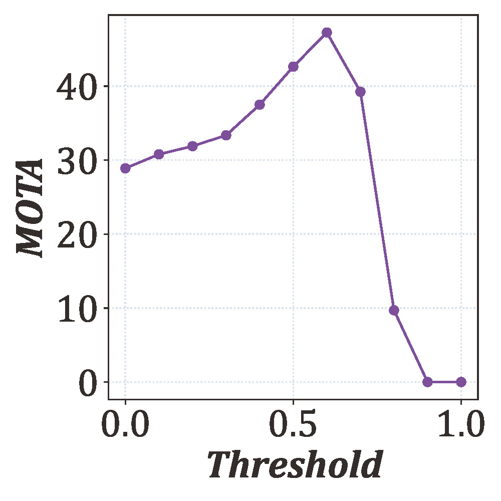
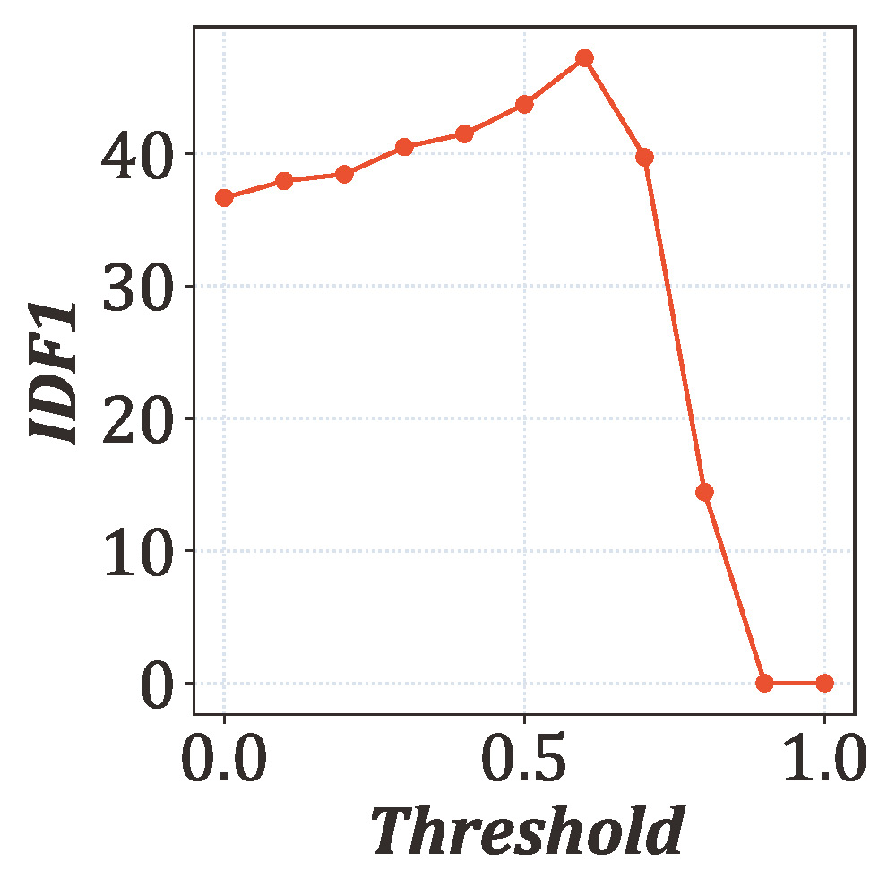
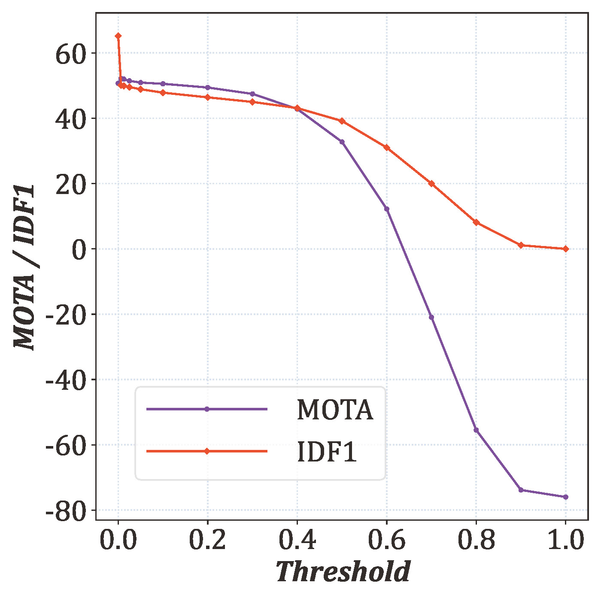
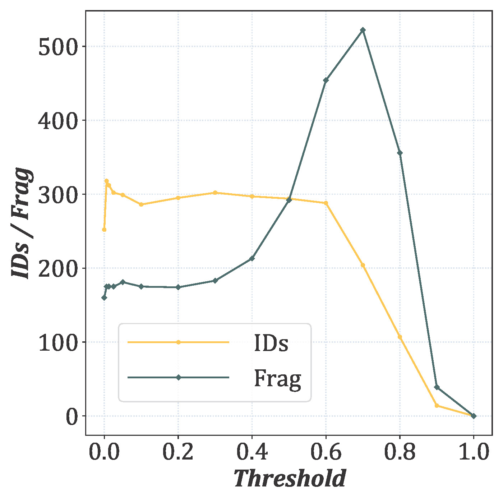

Abstract
Tracking is a core technique for analyzing complex fish behaviors, such as schooling and predator avoidance. However, this task presents unique and severe challenges compared to generic object tracking of rigid targets like pedestrians or vehicles. Fish exhibit extreme non-rigid deformation and erratic motion, while underwater environments are characterized by poor illumination and low visibility. These issues, compounded by the need for lightweight, real-time deployment in high-density scenarios, often lead to catastrophic target loss and identity switching in conventional trackers. To tackle these specific challenges, we propose M4FT, a lightweight and robust online multiple fish tracking framework. To overcome the limitation of CNNs in capturing large deformations due to local receptive fields, and the high latency of Transformers, we design M4Net as the detection backbone. By pioneering the Vision Mamba architecture in this domain, M4Net leverages selective state-space modeling to achieve global contextual modeling comparable to Transformers but with linear complexity. It efficiently captures the flexible morphology of fish, all while maintaining a lightweight footprint. Furthermore, to counteract adverse underwater conditions, we integrate an optional UIE module that adaptively enhances imagery, synergistically improving detection robustness without relying on computationally expensive appearance-based re-identification. Experimental validation on the challenging BrackishMOT benchmark shows that M4FT sets a new state-of-the-art, achieving the highest HOTA of 29.2 while incurring only ~10% of the computational cost of mainstream models.
Updates
- 07.Jan.26 Revised version is complete, and the project homepage is now online.
- 27.Feb.25 We have released the public repo with related resources.

Key Contributions
Lightweight & Efficient
M4FT is a lightweight online baseline designed for low-light underwater scenes. It eliminates dependency on complex appearance features, enabling efficient online tracking.
M4Net Architecture
A specialized lightweight detection network specifically designed for fish. It embeds a selective scan module to support global detection while maintaining a compact architecture.
Optional UIE Module
An optional module designed to boost tracking performance across various low-visibility underwater conditions and reduce overall training costs by bypassing appearance-based Re-ID.
SOTA Performance
Experimental validation on the BrackishMOT benchmark shows that M4FT outperforms other advanced methods, achieving the highest HOTA of 29.2.
Comparisons on BrackishMOT-M4FT

Parameter Sensitivity Analysis
To evaluate the robustness of our tracking framework and provide justification for our choice of hyperparameters, we conducted a sensitivity analysis on the key thresholds that govern the tracking process. We analyze three parameters: the IoU matching threshold (β), the high-confidence detection threshold (γ), and a post-processing evaluation threshold (α).
Phase 1 IoU Matching Threshold (β)

(a) HOTA (↑)

(b) MOTA (↑)

(c) IDF1 (↑)
We first analyze the impact of the IoU threshold (β) used for associating detections with tracklets. A higher β imposes a stricter spatial constraint for a match to be considered valid. The results show that performance is stable across a range of values, with a peak near β = 0.9.
Phase 2 High-confidence Detection Threshold (γ)

(a) HOTA (↑)

(b) MOTA (↑)

(c) IDF1 (↑)
Next, we investigate the high-confidence detection threshold (γ), which corresponds to τhigh in our association logic. This threshold determines which detections are considered reliable for the first matching stage. Results show that performance is optimal around γ = 0.6. Setting the threshold too high (e.g., >0.8) causes a sharp decline, as too many valid, lower-confidence detections (e.g., from occluded fish) are prematurely discarded.
Post-Process Evaluation Threshold (α)

(a) MOTA (↑) and IDF1 (↑)

(b) IDs (↓) and Frag (↓)
Finally, we examine the effect of an evaluation-only confidence threshold (α), which is a post-processing filter. While HOTA is unaffected by this parameter, other metrics are sensitive to it. We observe stable performance around α = 0.5.
Installation
# Step 1: Clone repo
cd {Repo_ROOT}
# Step 2: Install dependencies
# Python 3.10 & PyTorch 2.0.0 recommended
conda env create -f requirements.yaml
conda activate M4FT
# Step 3 (Optional): Data Generation
# Clone CycleGAN repo and follow implementation
# BrackishMOT-M4FT includes generated dataExperiments
# Train
python3 tools/train.py -f exps/example/mot/M4FT_exps.py --fp16 -o
# Test
# Recommended: --track_thresh 0.4
python3 tools/track.py \
-f exps/example/mot/M4FT_exps.py \
-c ../pretrained/M4Net.pth.tar \
--fuse